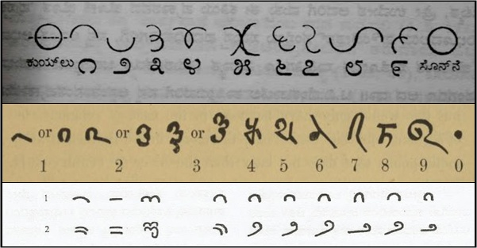

Beyond Numbers: Unraveling the Magic of Ancient Times

Numbers are more than just mathematical symbols—they carry deep cultural, spiritual, and philosophical significance. In ancient Indian traditions, numbers are woven into myths, festivals, and cosmic principles, revealing profound wisdom. Beyond Numbers takes children on a fascinating journey through these connections, helping them discover the magic hidden within numerical patterns. By blending mathematics with cultural heritage, this approach not only nurtures curiosity but also instills a deeper appreciation for the timeless knowledge embedded in numbers.
The Cultural Significance of Numbers
Each number holds unique meaning in Indian philosophy and traditions. For instance, the number 3 represents the Trimurti, the three supreme deities—Brahma (the Creator), Vishnu (the Preserver), and Shiva (the Destroyer). This divine trinity signifies the cosmic cycle of creation, preservation, and destruction, demonstrating the balance that governs the universe. Similarly, the concept of Panchabhutas—the five great elements—earth, water, fire, air, and space—forms the foundation of life, emphasizing harmony between nature and existence.
Numbers in Myths and Epics
Indian epics like the Ramayana and Mahabharata are rich with numerical symbolism. The number 7 appears frequently, such as the Sapta Rishis (Seven Sages) who guide human wisdom and the Saptapadi (Seven Steps) in Hindu weddings, representing the vows that bind two souls together. The Dashavatara, or 10 avatars of Vishnu, symbolizes different stages of evolution, from the aquatic form of Matsya (fish) to the enlightened Krishna and Kalki. These avatars illustrate the cycle of change and adaptation, linking mythology to philosophical thought.
Numbers in Festivals and Traditions
Festivals in India also celebrate numerical themes. The 9 nights of Navaratri honor the nine forms of Goddess Durga, each representing different aspects of strength and devotion. Similarly, the 108 beads of a prayer mala hold spiritual significance, as the number 108 is considered sacred in Vedic mathematics and cosmology. It is believed to represent the wholeness of existence, with connections to the Sun, Moon, and Earth’s celestial rhythms.
Teaching Math Through Culture
By exploring numbers in this way, children develop an intuitive understanding of mathematical concepts while also appreciating their cultural roots. Learning about zero, for example, reveals how ancient Indian mathematicians revolutionized the number system, shaping the way we understand mathematics today. The Fibonacci sequence, which appears in nature, also finds mention in ancient Indian architecture and temple designs, demonstrating the harmony between numbers and the universe.
Inspiring Curiosity and Wonder
Through Beyond Numbers, children not only learn about numbers but also uncover stories, traditions, and philosophies that make math more engaging and meaningful. When they see how numbers connect to history, mythology, and nature, they develop a holistic perspective—one that encourages both analytical thinking and cultural awareness.
By blending ancient wisdom with modern learning, Beyond Numbers transforms mathematics into an adventure, showing children that numbers are more than calculations—they are the language of the universe, filled with meaning, mystery, and magic.